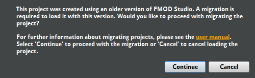
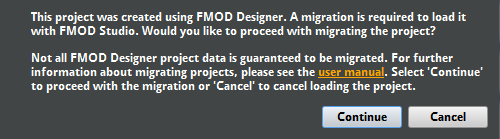

FMOD Studio User Manual 1.10
FMOD Studio offers a virtual voice system, giving you control over how many event instances are played at the same time. Instance limits can be set on individual events and on mixer buses.
Limiting the number of event instances in play at one time provides a less cluttered listening experience for the player and allows you to keep the audible focus on important game items or events. It also gives the added benefit of resource management, putting less strain on the player's machine.
Each event and group bus has a stealing property that determines which event instances should be stopped or virtualized when the number of playing events would otherwise exceed its max instances property.
Whenever the max instances value would be exceeded by an event instance being played, FMOD Studio follows the stealing behavior that has been set. The act of stealing an event instance is to either stop, prevent from playing, or virtualize it once certain conditions have been met, such as exceeding the max instances of an event, or exceeding the max instances of events routed through a group bus.
The stealing behavior can be set to one of the following:
A virtualized event instance is an event instance that is playing but produces no audio. When an event is no longer virtual and starts producing audio again, it is known as becoming "real". Virtualization always steals the quietest event instance.
Unlike other stealing behaviors, virtualization does not stop any existing event instances. The master track of a virtualized event instance is muted but the playback position continues advancing. The event becomes real when it is no longer the quietest event instance in play. Because the playback position is still advancing through the event, when it becomes real it is as if the event was never muted, giving the illusion of simply being out of earshot. All behaviors within the virtualized event instance, such as game parameters, automation, conditions being met, and instruments triggering perform as normal.
It is important to note that FMOD Studio events create low-level FMOD::Channels in order to play audio. Each single instrument and programmer instrument playing counts as a channel, and each playlist entry playing in multi instruments, scatterer instruments, and the relevant contents of an event instrument count as a channel. These channels also have the ability to go virtual or real, which can cause parts of the event to go silent if the maximum voice limit has been reached. You can avoid situations like this by allocating priorities to each event as needed. Also note that an event instrument does not inherit its parent event's priority and needs to have its priority set to match the parent to avoid the aforementioned partial virtualization.
If the low-level FMOD API is initialized with the FMOD_INIT_VOL0_BECOMES_VIRTUAL flag, FMOD::Channels automatically go virtual when their audibility drops below the limit specified in the FMOD_ADVANCEDSETTINGS vol0virtualvol field.
For more information on the virtualization, see the low-level API documentation on the virtual voice system.
Virtualization and quietest stealing behaviors steal the least audible event instances. The audibility level is calculated with the following variables:
In order for FMOD Studio to play events, the master bank needs to be loaded at all times in your game's code.
The master bank contains the global mixer for the FMOD Studio project. The global mixer includes all of the group buses, return buses, VCAs, and snapshots for the given project.
Most importantly, the master bank contains the master bus for the project. Since the master bus will output to the machine's speakers, anything that does not go through the global mixer will not be output to the speakers. Due to this, the master bank must be loaded at all times in order for all events to be audible.
Master banks can also have events assigned to them. In this case, the master bank also contains those events and their referenced sample data. Your game code can access these events the same way as any other bank.
The play state of an event instance is what that instance is currently doing: Whether it is currently playing, paused, stopping, or stopped. The playback state of an event instance influences how and when it is loaded into memory, the amount of memory it consumes, and the number of voices it requires. As such, a detailed understanding of play states can help you improve your game's performance.
Each play state is associated with certain behaviors.
A playing event instance outputs to the mixer. Its timeline playback position automatically advances until it encounters a sustain point. If one of its parameters is set to a new value, that parameter's playback position changes to the new value at a rate defined by that parameter's seek speed. If any of its parameters have velocity, the playback positions of those parameters automatically advance.
A playing event instance can be made to enter the paused, stopping, or stopped play states. A playing instance of a non-persistent event automatically enters the stopped play state if there is no content to the right of its timeline playback position and no instruments in that event instance are currently producing output.
A paused event instance does not produce output, but continues to consume system resources as if it were playing. The playback positions of its timeline and parameters do not automatically advance. If one of its parameter values is changed, that parameter's playback position is updated when the event instance is next unpaused. An event instance that was paused while stopping resumes stopping when unpaused.
A paused event instance can be unpaused, which causes it to enter the play state it was in prior to being paused. Immediately stopping a paused event instance causes it to enter the stopped play state.
A stopping event instance behaves identically to a playing event instance, except that the release periods of AHDSR modulators on the event's properties are applied to those properties, and that the event instance automatically enters the stopped play state once all of those release periods are completed and the tails from all its reverb and delay effects have played out.
A stopping event instance can be made to enter the paused or stopped play states. A stopping event instance automatically enters the stopped play state once the release periods of all AHDSR modulators on the event's properties are completed.
A stopped event instance does not produce output. Its playback positions do not automatically advance. If its parameter values are changed, the playback positions of those parameters instantly move to their new positions.
A stopped event instance can be made to enter the playing play state.
The play states used for the purposes of sound design in FMOD Studio differ slightly from the "playback states" used by FMOD_STUDIO_PLAYBACK_STATE in the FMOD Studio programmer's API. To convert from FMOD Studio play states to FMOD Studio programmer's API playback states, see below.
| FMOD Studio play state | Equivalent FMOD_STUDIO_PLAYBACK_STATEs | Notes |
|---|---|---|
| Playing | FMOD_STUDIO_PLAYBACK_PLAYING | An event instance that is currently playing is in the FMOD_STUDIO_PLAYBACK_PLAYING playback state. |
| Paused | FMOD_STUDIO_PLAYBACK_PLAYING FMOD_STUDIO_PLAYBACK_SUSTAINING FMOD_STUDIO_PLAYBACK_STOPPING |
Pausing event instances is handled via Studio::EventInstance::getPaused and Studio::EventInstance::setPaused, rather than FMOD_STUDIO_PLAYBACK_STATE. As such, an event instance that is paused has the same FMOD_STUDIO_PLAYBACK_STATE it had when unpaused. |
| Stopping | FMOD_STUDIO_PLAYBACK_STOPPING | An event instance that has been told to stop, but which is in the process of playing out its AHDSR modulator release periods before it stops completely, is in the FMOD_STUDIO_PLAYBACK_STOPPING playback state. |
| Stopped | FMOD_STUDIO_PLAYBACK_STOPPED | Events that are currently stopped are in the FMOD_STUDIO_PLAYBACK_STOPPED playback state. |
To convert from FMOD Studio programmer's API playback states to FMOD Studio play states, see below.
| FMOD_STUDIO_PLAYBACK_STATE | Equivalent FMOD Studio play states | Notes |
|---|---|---|
| FMOD_STUDIO_PLAYBACK_PLAYING | Playing Paused |
Pausing an event instance does not change its FMOD_STUDIO_PLAYBACK_STATE, so an event instance in the FMOD_STUDIO_PLAYBACK_PLAYING state is in that state even if it is also paused. |
| FMOD_STUDIO_PLAYBACK_SUSTAINING | Playing Paused |
Sustain points change an event instance's FMOD_STUDIO_PLAYBACK_STATE, but not its play state in FMOD Studio. Pausing an event instance does not change its FMOD_STUDIO_PLAYBACK_STATE, so an event instance in the FMOD_STUDIO_PLAYBACK_SUSTAINING state is in that state even if it is also paused. |
| FMOD_STUDIO_PLAYBACK_STOPPED | Stopped | |
| FMOD_STUDIO_PLAYBACK_STARTING | N/A | There is no FMOD Studio play state equivalent to the FMOD Studio API's FMOD_STUDIO_PLAYBACK_STARTING playback state. |
| FMOD_STUDIO_PLAYBACK_STOPPING | Stopping Paused |
Pausing an event instance does not change its FMOD_STUDIO_PLAYBACK_STATE, so an event instance in the FMOD_STUDIO_PLAYBACK_STOPPING state is in that state even if it is also paused. |
For more specific information about FMOD_STUDIO_PLAYBACK_STATE and playback states in the FMOD Studio API, see FMOD_STUDIO_PLAYBACK_STATE in the FMOD Studio Programmer's API documentation.
In order to access items within your FMOD Studio project in game code, you need to identify those items either by name and path, or by GUID.
Items within your project that use GUIDs and paths will be referred to as "objects" in this section.
Some of these objects can have their GUID or path copied to the clipboard. Objects within your project that you can copy GUIDs and paths from include:
To find the GUID or path of an object in your project, right click on it and select "Copy GUID" or "Copy Path" then paste it into the text editor of your choice. You can also drag and drop it onto the search bar or onto a text editor to automatically paste its GUID and path.
All objects within your FMOD Studio project contain identifiers known as GUIDs. A GUID is a "Globally Unique Identifier." Each GUID is a unique series of characters and numerals associated with an object within your FMOD Studio project, which may be used to identify that object. This means an object created in the same location multiple times has a completely different GUID each time. For example, if the event "Situation_Oriental" at "event:/Music/Complex/Situation_Oriental" is deleted and replaced by another event with the same name, both events have the same path but they have two different GUIDs.
Note that not all objects within your project that have GUIDs will have the "Copy GUID" option within their context menu.
As well as the previously mentioned "Copy GUID" option in the context menu, you can also find the GUID of an object using ManagedObject.id in script.
The FMOD Studio programmer's API can only identify an event by name and path if the strings.bank file is loaded. If your game does not load the strings.bank file, you need to use GUIDs to access your events.
A path is the unique location of an object within your FMOD Studio project.
Paths are the most common method of accessing an event in game code.
Paths include the hierarchical structure, such as folders, snapshot groups, or group buses, as well as the name of the object you are referencing, such as the bus name, event name, etc. For example, the event path for the "Situation_Oriental" event in the examples project is "event:/Music/Complex/Situation_Oriental".
Unlike with GUIDs, a path is not uniquely created for each instance of an object in your project. For example, if you deleted the above "Situation_Oriental" event, then created a new one with the same name, any game code referencing "event:/Music/Complex/Situation_Oriental" will still work, accessing the newly created event.
Using paths in your game code rather than GUIDs makes it easier to understand which object is being accessed. Note that in order to use paths in your game code, you will need to load the strings.bank file.
In your game code, you can use GUIDs and paths to get events, buses, and other such objects.
// Retrieving an event via the path FMOD::Studio::EventDescription* explosionDescription = NULL; ERRCHECK( system->getEvent("event:/Explosions/Single Explosion", &explosionDescription) ); // You can also use getEvent() to retrieve snapshots FMOD::Studio::EventDescription* snapshotDescription = NULL; ERRCHECK(system->getEvent("snapshot:/IngamePause", &snapshotDescription)); // Retrieving a bus via its GUID FMOD::Studio::Bus* sfxBus; ERRCHECK( system->getBus("{d320eb98-3d4a-4cd9-a001-fdb4e071c58e}", &sfxBus));
For more information on using GUIDs and paths with creating events in game code, please see the FMOD API documentation.
When using FMOD Studio scripting you can view the GUID of any object by using ManagedObject.id. An object can be looked up by GUID or path using studio.project.lookup().
var myEvent = studio.project.lookup("%GUID%"); // Replace %GUID% with the GUID of your event.
FMOD Studio installations all come with a command line tool. It can be found in the following locations:
C:\Program Files\FMOD SoundSystem\FMOD Studio%app\_bundle%/Contents/MacOS - The %app_bundle% is the "FMOD Studio.app" file in the installation folder.On a 64 bit Windows OS with a 32 bit installation of FMOD Studio, this path will be C:\Program Files (x86)\FMOD SoundSystem\FMOD Studio.
In order to navigate into the app bundle on a Mac, run cd FMOD\ Studio.app/ when in the installation folder.
Open the command prompt in Windows, or the Terminal on Mac and navigate to the folder FMOD Studio is installed in. Once in the correct directory, you can now run the FMOD Studio command line tool. On both operating systems simply run fmodstudio followed by one or several options and the the path to a project .fspro file.
The following options are valid:
-build - Build mode for command line tool. If -banks or -platforms is not specified, builds all banks to all platforms set in preferences.-banks %bank_names% - Comma-separated list of banks to build. Must be in build mode. (Optional)-platforms %platform_names% - Comma-separated list of platforms to build. Must be in build mode. (Optional)-export-guids - Exports event GUIDs and mixer GUIDs to text files. Must be in build mode. (Optional)-shared-audio-source-dir %path% - Overrides the project's assets folder path with the specified path. Must be in build mode. (Optional)-ignore-warnings - Continue building if warnings are detected. Must be in build mode. (Optional)-diagnostic - Runs validation check on the project for potential corruptions and errors-script %path_to_script_file% - Javascript file path to run. The file path can be relative to the working directory or an absolute file path. For more information, see the chapter on the FMOD Studio Scripting API.-help - Displays usage information for command line tool.%path_to_project% - Path to a project .fspro file. The file path can be relative to the working directory or an absolute file path. Must be last in the command.fmodstudio -build foobar.fspro # Builds all banks for all platforms for the project "Foobar" fmodstudio -build -banks "Master Bank, SFX, Music" foobar.fspro # Only builds the banks "Master Bank", "SFX", and "Music" for all platforms for the project "Foobar" fmodstudio -build -banks "Master Bank" -platforms "Desktop" foobar.fspro # Only builds the "Master Bank" for the desktop platform for the project "Foobar" fmodstudio -build -platforms "Desktop, XboxOne, PS4" foobar.fspro # Builds all banks for only desktop, Xbox One, and PS4 for the project "Foobar" fmodstudio -build -banks "Master Bank, Dialog" -ignore-warnings foobar.fspro # Only builds the banks "Master Bank" and "Dialog", ignoring all warnings for the project "Foobar" fmodstudio -build -banks "Master Bank, Dialog" -export-guids foobar.fspro # Only builds the banks "Master Bank" and "Dialog", exporting the GUIDs for both text file for the project "Foobar" fmodstudio -build -shared-audio-source-dir "C:/audio assets" foobar.fspro # Builds all banks to all platforms using a custom assets folder for the project "Foobar" fmodstudio -script foo.js foobar.fspro # Runs the script "foo.js" in the project "Foobar" fmodstudio -diagnostic foobar.fspro # Runs diagnostics against the project "Foobar"
Moving projects between major versions of FMOD Studio usually requires a project migration. When opening a project created using an earlier version, you will be prompted to migrate it.

This process may take a considerable amount of time, depending on the size of your project and the version. While the migration process is non-destructive, meaning nothing is overwritten until the project is saved, it is highly recommended to make a backup of the project prior to starting the migration process.
Once you have migrated and saved, you will not be able to load the project using earlier versions of Studio.
If there are multiple users working on your project, you should appoint one person to manage the migration. Before migrating, all users should commit their outstanding changes to the version control server. If instead you are using a shared drive or cloud storage, you should ensure that the version of your project on the drive or cloud storage includes all users' outstanding changes. Once all changes are committed, the migration manager should retrieve the project and perform the migration. After the project has been migrated and saved, the migration manager should commit the updated version of the project to the version control server. For other forms of project sharing that do not keep track of the file changes (e.g. a shared drive or cloud storage), the project directory should be replaced with the newly migrated one such that any obsolete files are removed.
FMOD Studio supports migrating FMOD Designer projects to the FMOD Studio project format. The migration process can be started by using the 'File > Open...' dialog and selecting an FMOD Designer project or an FMOD Designer workspace.
For titles consisting of multiple FMOD Designer projects, the projects should first be added to an FMOD Designer workspace which can be migrated as a whole. Migrating an FMOD Designer workspace ensures common categories in the associated FMOD Designer projects are consolidated and the events are assigned accordingly.

Most elements of an FMOD Designer project are migrated to FMOD Studio in some form. However, there are some features that are currently not supported and as such will not be preserved or migrated across.
The music system in FMOD Designer is currently not supported by the migration process.
The following effects are currently not supported or only partially supported by FMOD Studio. As such, the effect and any of its related envelopes may not be migrated across.
[0 - 5] as part of the migration which translate to [0% - 500%] in FMOD Studio.[1 - 64]: Migrated and value is preserved.[65 - ∞]: Migrated to ∞.Steal newest: Not supported and migrated as Just fail.Just fail if quietest: Not supported and migrated as Just fail.Head relative: Not supported.The following properties of a sound def are currently not supported or partially supported. For more information about play mode behavior in FMOD Studio, refer to the description of a multi instrument.
Sequential Event Restart: Migrated and behavior is preserved.Sequential: Not supported and migrated as Sequential Event Restart.Random: Migrated and behavior is preserved.Random No Repeat: Migrated and behavior is preserved if all items in list have equal weighting.Shuffle: Migrated and behavior is preserved if all items in list have equal weighting.Programmer Selected: Not supported and migrated as Sequential Event Restart.Shuffle Global: Not supported and migrated as Random.Sequential Global: Not supported and migrated as Sequential Event Restart.Randomize When Event Starts: Not supported.[0 - 32]: Migrated and value is preserved.[32 - ∞]: Migrated as a capped value of 32.Loop Behavior:
Oneshot and stop event: Not supported.Loop: Not supported.Special behaviors:
FMOD Studio currently only supports sustain points on the timeline, and so any FMOD Designer parameter with sustain points will be migrated to a timeline. The migration process also requires the parameter with sustain points to have non-zero velocity. If an FMOD Designer event contains multiple parameters with sustain points, the sustain points for the first parameter from the top will be migrated across and the rest of the sustain points will be ignored.
Audio tables are lists of audio files held externally from the FMOD Studio project's asset folder. These audio files can be used by any programmer instruments. These audio files are assigned to a bank and, at the time of building, are compressed and bundled together with the other assets.
To create an audio table, right click on a bank in the banks browser and choose "Add Audio Table". You can include all audio files within a folder by by browsing to or typing the source folder into the "Source directory" section. FMOD Studio can recursively search through every sub folder from this source folder for all audio files if the "Include sub directories" checkbox is ticked.
Audio tables are designed to scale to handle thousands of lines, so one of the benefits of this feature is reduced project complexity as one event with a programmer instrument can stand in for many dialog lines in the game.
There can only be one audio table per bank.
Programmer instruments are used as placeholders for these audio files within events. When played these instruments generate callbacks within the engine allowing the game to choose which audio file to play. For more information on callbacks and how to use them, please see our FMOD API documentation for both Unreal Engine 4 and Unity 3D.
You can audition audio files in the audio table itself, however a programmer instrument cannot play the file it is referencing within FMOD Studio. That being said, you can still place an audio file into the "Placeholder" section of a programmer instrument and it will play within an event in FMOD Studio. Any audio files placed into a programmer instrument will not be bundled into the banks when building.
Note: The path can include environment variables, for example %HOME% or $HOME. If the path is relative, e.g. ../source it is treated as relative to the project directory.
A "key" is the variable name given to an audio file that is included in an audio table. It is used in place of the audio file's name and path (if needed).
By default, setting up an audio table will use the audio file's name (minus the extension) as the key.
If you wish to use different keys, you can place a comma separated keys.txt file in the source directory to specify a custom key for each file.
Here is an example keys.txt file:
Greetings,hello01.wav Farewell,goodbye01.wav
Let's assume your game will be localized into three languages (English, French, Japanese), you can have three banks with the following identical audio table:
| Keys | Audio File |
|---|---|
| Greetings | hello01.wav |
| Farewell | goodbye01.wav |
For each audio table in each bank, you will simply need to change the "Source directory" to match where your localized audio files are kept.
In this case it might be "../Dialog/en", "../Dialog/fr", and "../Dialog/jp".
For each of these banks you will need to copy and paste the keys.txt file into each source directory.
Each audio table holds the localized audio files for a language. By creating an audio table for each language, and using a language-independent key for each dialog line, the engine is able to lookup the localized audio file to play.
As mentioned earlier; programmer instruments are used as placeholders for dialog lines within events. When this instrument is triggered it generates callbacks within the engine allowing you to inform the game which dialog lines to play. The engine looks up the localized dialog line using an audio table.